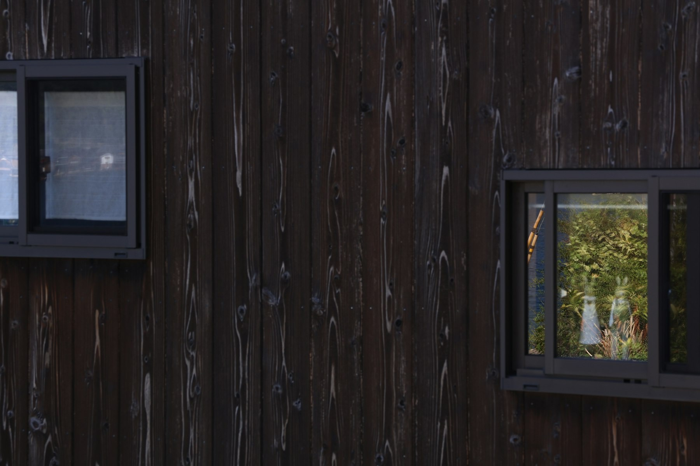
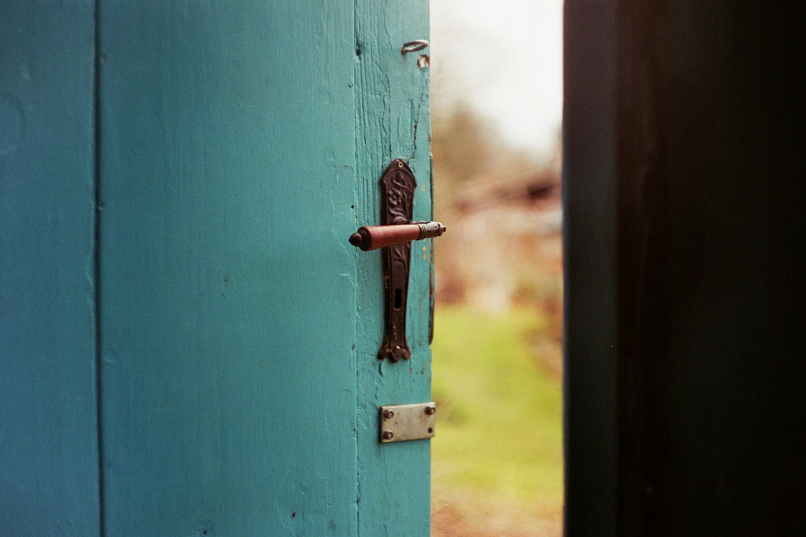

Let op: dit opent een echt bericht aan 06-21193640. Het wordt pas verstuurd als je zelf op verzenden drukt.
Idee 3
Voor/na-galerij
Per project een schuif, met knoppen om op soort werk te kiezen.
Kozijnen hersteld

Nieuwe gevelbekleding

Deur en beslag vervangen
Stockfoto's met een filter als "voor". Met echte foto's van eigen werk wordt dit pas overtuigend.
Idee 4
Werkgebied met postcodecheck
De bezoeker vult de vier cijfers van zijn postcode in en ziet meteen of ATO bij hem komt.
Probeer 3231, 3207, 3253 of 3011.
De kaart is een schets, geen echte kaart. De postcodes zijn een eerste opzet en moeten nog worden nagelopen.
Idee 5
Gevelkleur kiezen
De bezoeker ziet hoe een andere kleur gevelbekleding op een huis staat.
Antraciet
De kleuren zijn verzonnen voorbeelden, geen echte Trespa-kleuren. Voor het echte werk zijn de materialen van de eigenaar nodig, en liefst een foto van een echt huis.